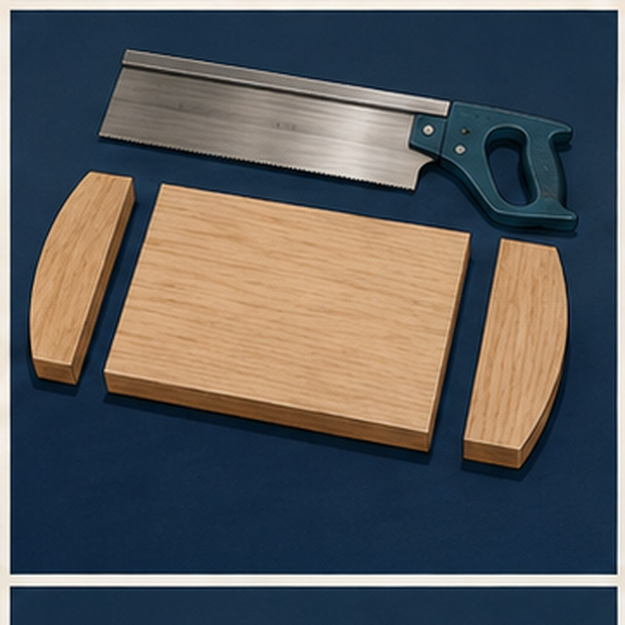
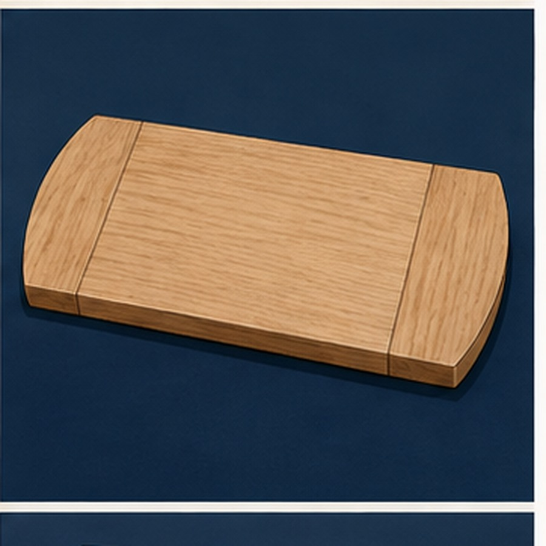
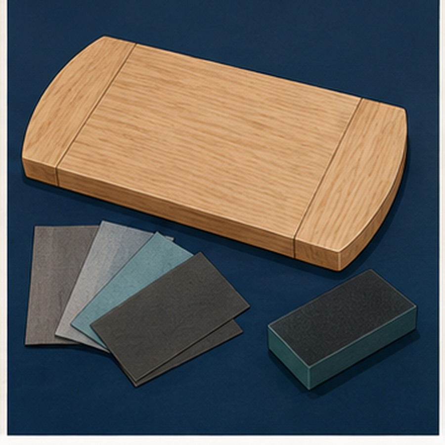
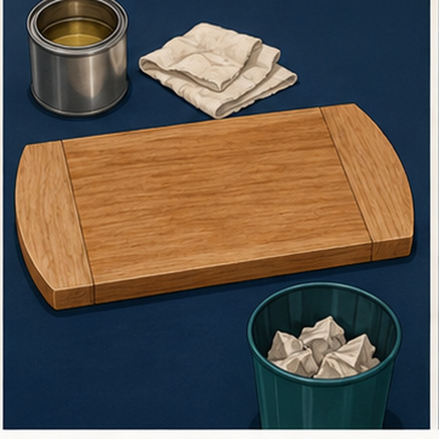
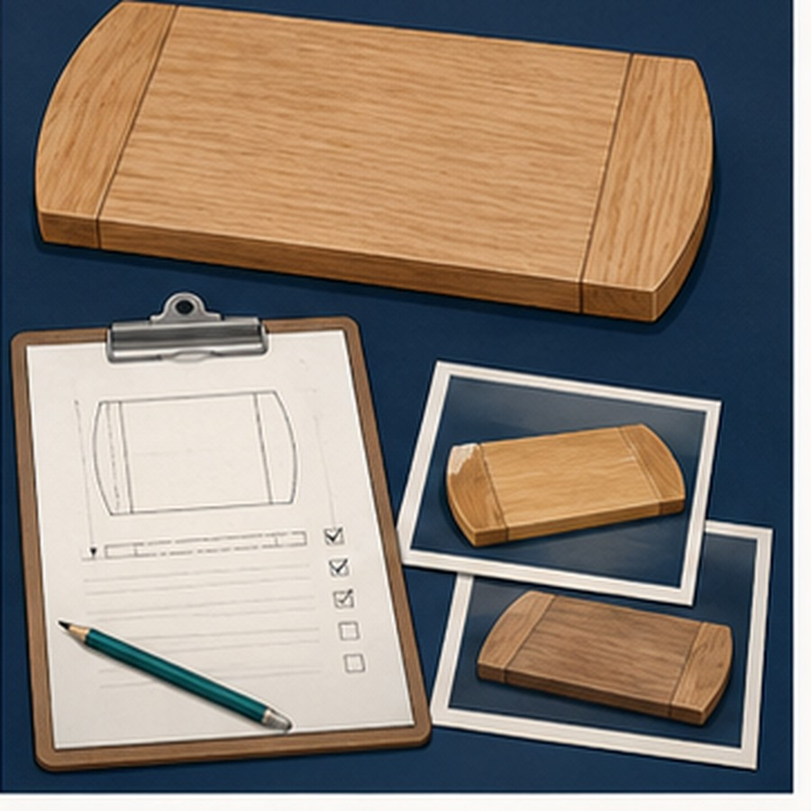

1
Project brief
Identify the required outcome and the plan or brief evidence that guided your first decision.
Project evidence
Twelve purposeful checkpoints from project brief to final evaluation

Your evidence
Notes and compressed photo previews save in this browser. Download a backup and save a PDF before changing devices.
How to use the folio
At each checkpoint, add a clear photograph of your own work and write a caption that explains the stage, action, reason and result. Problems and corrections are valid evidence when they are described honestly.
Identify the required outcome and the plan or brief evidence that guided your first decision.

Show personal readiness and one meaningful check of the shared workshop.

Explain how the plan, datum and component orientation controlled the layout.

Record how grain, defects, appearance or component purpose affected selection.

Show one checked datum-based mark and explain how ambiguity was prevented.

Record a controlled preparation step and the boundary or quality check that protected the result.

Explain how matching centre lines, slots and flat biscuits were kept aligned.

Show the full dry fit and record one alignment, orientation or gap check.

Explain the sequence, balanced pressure and alignment check used during permanent joining.

Show a surface inspection or sanding stage and explain how the planned form was preserved.

Record the approved finishing stage and how contamination, excess material and oily waste were controlled.

Judge one strength, one fault or limitation, its likely cause and a realistic improvement.
Keep your evidence
Use Print / Save PDF for a readable evidence copy. Use Download backup if you may return to edit the folio in this browser later.
The JSON backup is for restoring work to this folio. The PDF is the readable evidence copy. Neither file is uploaded automatically.